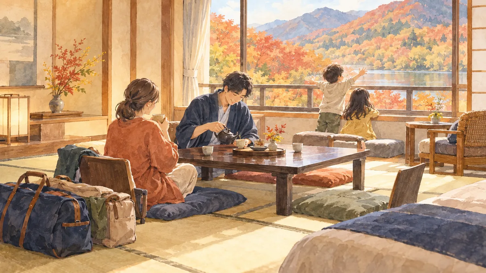

TRAVEL
家族旅行を安くする方法。安い時期の考え方、予約のタイミング、クーポンと子連れの宿の選び方

本記事にはアフィリエイト広告（PR）が含まれます。紹介した商品を購入されると、当サイトに報酬が入ることがあります。内容は運営者が調べて書いています。
家族旅行は、人数が多いぶん、宿泊費も交通費も大きくなります。ただ、同じ行き先・同じ宿でも、時期と予約の仕方で費用は大きく変わります。この記事では、家族旅行を安くするための時期の考え方、予約のタイミング、クーポンの使い方、子連れで泊まりやすい宿の条件を整理します。今週の親記事 家族の支出を 7 つのジャンルで見直す順番 のまとめとなる関連記事です。
この記事について
- 料金・クーポン・キャンペーンの内容は時期によって変わります。予約前に各サービスの最新の案内をご確認ください。
- 本記事にはアフィリエイトリンクが含まれます。
安い時期の考え方
旅行の料金は、需要が集まる時期に高く、空いている時期に安くなります。家族旅行で動きやすい時期と重なるのが難しいところです。
| 時期 | 料金の傾向 | 家族での使い方 |
|---|---|---|
| 年末年始・ゴールデンウィーク・お盆 | 高い | 予約が早く埋まる。行くなら早めに予約 |
| 3 連休・春休み・夏休みの週末 | 高め | 連休の初日を外す、帰りを平日にする |
| 連休明けの平日・閑散期 | 安い | 子どもが小さいうちは平日の旅行を選びやすい |
同じ連休でも、出発日を 1 日ずらす、日曜泊にする、といった工夫で料金が下がることがあります。予約サイトで日付を前後に動かして比べます。
予約のタイミング
- 混み合う時期は早めに。 家族向けの部屋（和室、広めの洋室）は数が少なく、早く埋まりやすいです。
- キャンセル料の条件を確認する。 子どもの体調で予定が変わることを考え、キャンセル無料の期限が長いプランを選ぶと安心です。
- セールの時期を知っておく。 予約サイトでは、割引の企画やクーポンの配布が行われる時期があります。
クーポンの使い方
楽天トラベルなどの予約サイトでは、条件を満たすと予約時に使える割引クーポンが配られることがあります。使うときは次の点を確認します。
- 対象の宿・期間・最低金額。 クーポンごとに使える条件が違います。
- 先に獲得が必要か。 クーポンページで獲得してから予約する形が一般的です。
- 1 予約で使える枚数。 併用できない場合は、割引額の大きいほうを選びます。
子連れで泊まりやすい宿の条件
- 添い寝の料金。 未就学児の添い寝を無料や割安にしている宿があります。人数の入れ方で料金が変わるので、予約時に確認します。
- 部屋の形。 和室や小上がりのある部屋は、小さい子どもが転がっても安心です。
- お風呂。 貸切風呂や部屋風呂があると、周りに気を遣わずに入れます。
- 食事。 子ども用の食事や、部屋食・個室食の有無を確認します。
ふるさと納税の旅行券も選択肢に
行き先が決まっているなら、その自治体のふるさと納税の返礼品に、宿泊券や旅行クーポンがあるか確認します。控除の上限の範囲で受け取れば、旅行費の一部を置き換えられます。選び方は 食べ物以外のふるさと納税 で扱いました。
まとめ
- 混み合う時期を外す、出発日を 1 日ずらすだけでも料金は変わる。
- 家族向けの部屋は早めに。キャンセル無料の期限も確認する。
- クーポンは条件と獲得の手順を確認し、ふるさと納税の旅行券も組み合わせる。